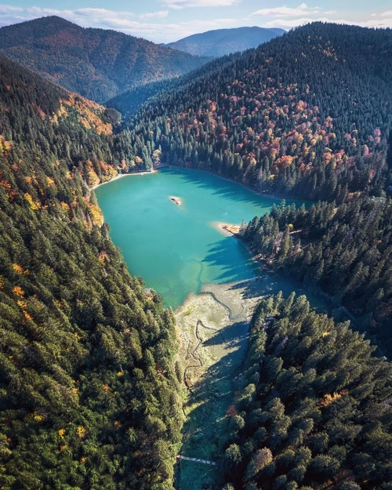
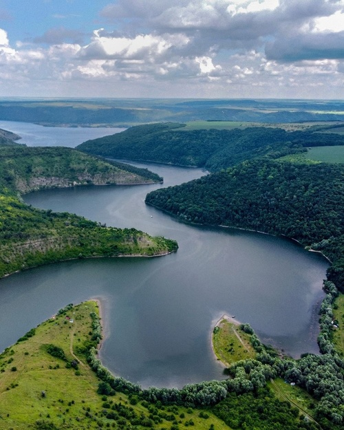
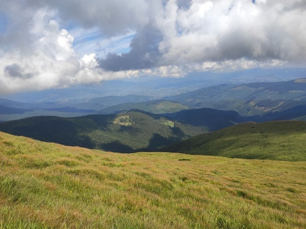
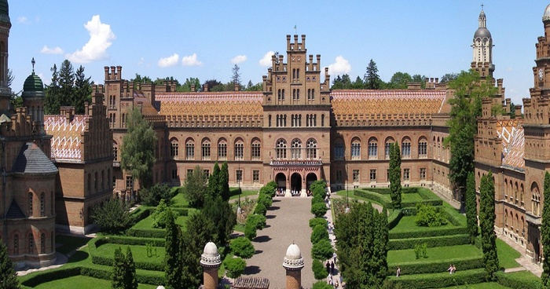
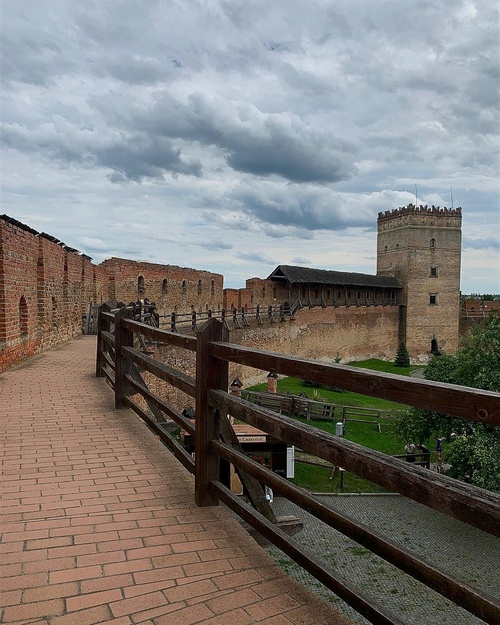

Озеро Синевир
Синевир вважається одним із семи природних чудес України. Це найбільше за площею гірське озеро нашої країни, розташоване на висоті майже 1000 м над рівнем моря. Максимальна глибина досягає 25 м, а купатись тут не можна навіть улітку. Адже температура води не буває вищою за 12 °C. Неподалік озера знаходиться унікальне та єдине в країні місце – центр реабілітації бурих ведмедів. Тут доглядають за тваринами, які жили в неналежному середовищі або стали жертвами насильницьких дій.
Озеро Синевир є популярним місцем не тільки для любительських відео, а й для повноцінних фільмів. Воно настільки вабить усіх своєю містичністю, що про нього зняли однойменний фільм жахів, який вийшов у прокат у 2013 році. Також Синевир згадувався у таких кінострічках як «Трагедія Карпатської України», «Червона рута», «Урсус». А у 2018 році тут знімали українсько-французький фільм «Останній крок» з Жаном Рено у головній ролі.
Дністровський каньйон
Найдовший в Україні Дністровський каньйон захоплює одразу чотири області: Івано-Франківську, Хмельницьку, Чернівецьку та Тернопільську. Його довжина 250 км. Навколо річки є соснові та мішані ліси, природні заповідники та скелі девонського геологічного періоду, яким понад 400 мільйонів років.
Що подивитись на Дністровському каньйоні?
Окрім неймовірних пейзажів, заходів сонця та різних активних видів відпочинку, Дністровський каньйон знайде чим зацікавити допитливого мандрівника. Цікавих локацій тут десятки, але щоб не перетворювати цю сторінку на окрему монографію, наведемо тільки кілька найбільш популярних.
- Спускаючись по течії Дністра ви можете завітати до Раковецького замку, що був збудований у XVII ст. на травертиновій скелі.
- Порт «Раковець». Невеличка пристань, яку збудували кілька років тому.
- Червона гора. Спойлер: вона не червоного кольору. Мальовниче місце та чудовий оглядовий майданчик на лівому березі Дністра.
- Острів «Інь-Янь». Невеличний острів на Дністрі, що утворився внаслідок повені 1969 р.
Говерла
Карпати вже давно завоювали серця українців і не тільки. А їхньою окрасою та справжньою гордістю України вважається Говерла — найвища гора нашої держави. Її висота — 2060,8 м над рівнем моря. Після виснажливого підняття на вершину ти можеш відпочити в традиційних чанах, скуштувати банош та запити його карпатським домашнім вином. Схоже на ідеальний розпорядок дня, чи не так?
- Перший туристичний маршрут на гору Говерла було відкрито ще у 1880 році.
-
Здійснювати сходження на Говерлу можна зі сторони:
- селища Ворохта (Івано-Франківська обл),
- с. Лазещина (Закарпаття),
- а також з г. Петрос та г. Брескул.
- Заблукати на шляху до вершини практично неможливо, тому що вся дорога оснащена спеціальними помітками. Та й шлях настільки протоптаний туристами, що нагадує пейзажі зі старих дитячих мультфільмів, аніж дикі й непролазні лісові хащі.
- Підкорювати гору найкраще в літні місяці, а особливо у липні та серпні. В цей період найбільші шанси побачити неймовірні гірські пейзажі з вершини Говерли.
Чернівецький національний університет
Українці — талановита й розумна нація, яка завжди тягнулась до навчання попри всі перепони. Чернівецький національний університет імені Юрія Федьковича приваблює не тільки високою якістю освіти, а й своєю будівлею. Вишуканий архітектурний ансамбль оберігається державою та внесений до світової спадщини UNESCO.
Замок Любарта
Звісно, це дуже популярне, але точно не банальне туристичне місце. Луцький замок або замок Любарта — один із найдавніших збережених в Україні палаців. До війни на його території любили проводити різні фестивалі, а його будівля стала стійким символом Волині.
Сьогодні Луцький замок – це цілісній музейний комплекс. На другому поверсі В’їзної вежі розташована виставка «Плитниця», де експонуються старовинні будівельні матеріали, знайдені в ході археологічних досліджень.На нижньому ярусі Владичої вежі можна відвідати середньовічну в’язницю й оглянути відповідну експозицію.Ярусом вище – виставка замкової зброї, де розміщений арсенал XV−XVII століть.На верхніх ярусах вежі розміщений єдиний в Україні музей дзвонів. Тут зібрана чимала колекція дзвонів із України, Польщі, Австрії, Румунії. Найдавніший з них датується 1647 роком.